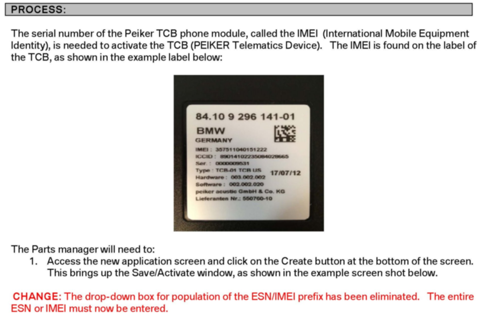

BMW ASSIST(R) - Combox Repl. Part Activation via DCSnet
SI B84 03 11Communication Systems
September 2012
Technical Service
This Service Information bulletin supersedes SI B84 03 11 dated September 2011.
[NEW] designates changes to this revision
SUBJECT
[NEW] Telematics Device Spares Replacement Part Activation via DCSnet for BMW Assist
MODEL
[NEW] All vehicles equipped with BMW Assist (639 or 6NL)
[NEW] INFORMATION
The following changes have taken place:
^ Introduction of the Peiker Acoustics TCB (Telematics Control Board) as the successor to the current Combox. The TCB is available in all 5 and 7 Series vehicles beginning with July 2012 production.
^ The application name has been changed from "Combox Activation" to "Telematics Device Spares Activation."
^ All Telematics control unit spares, including CDMA, can now be activated by Part managers via the DCSnet application. Service technicians no longer need to contact the Telematics Analyst with activation requests. New MIN and MDN numbers needed for programming into CDMA units will be made available in the Telematics Device Spares Activation application after the Parts managers have completed the activation process. These numbers will be provided to the Service Technician by the Parts manager following activation.
[NEW] PROCEDURE
Please refer to the attachment for the updated instructions on Telematics control unit replacement parts activation via DCSnet.
NOTE:
As was the case in the original procedure, Telematics control unit replacement parts activation is still intended to be performed by Parts managers only.
All Telematics control unit spares are to be activated by the Parts manager before release to the technician for installation in the vehicle.
[NEW] WARRANTY INFORMATION
Not applicable.
ATTACHMENTS

B840311_Replacement_Telematics_Device_Spares_Activation.